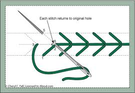
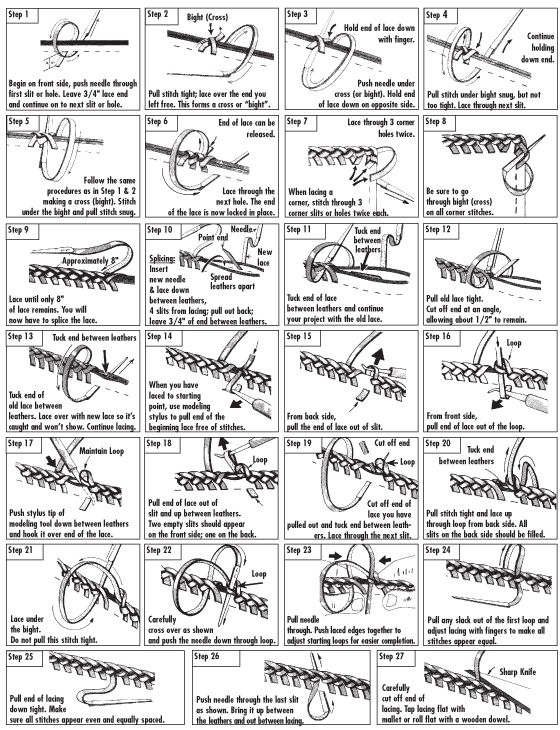

These images shown below give detailed exmples on how stitching works. It can also teach newcomers how to stitch by themselves for recreational projects!
The Pine Tree Stitcharoo |
|  |
Various Assortment of Stitching Techniques |
|  |
Welp. Thats all I got folks.Click on this to go back and check out the other hobbies...yeah.
HobbyFinder.com